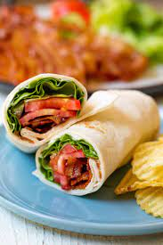

BLT Wraps

Description
A classic sandwich in wrap form! Versatile and full of flavor, this recipe is sure to plese your taste buds!
Ingredients
- 1 lbs. bacon
- 1 head butter lettuce, leaves roughly chopped
- 3 small ripe tomatoes, sliced
- 6 large burrito-size tortilla wraps
For the chive mayo
- 1/2 cup mayo
- 2 tbsp. thinly sliced fresh chives
- 1 tbsp. lemon juice
- 1/2 tsp. garlic powder
- 1/8 tsp. kosher salt
Steps
- Preheat oven to 375 degrees
- Arrange bacon on foil lined baking sheets, making sure bacon is not overlapping. Bake for 15-20 minutes until brown and crispy. Remove bacon from baking sheets drain on paper towels.
- Combine mayo, chives, lemon juice, garlic powder and salt in medium bowl. Set aside.
- Spread about 2 tbsp. of may on wrap. Layer butter lettuce, tomato slices, and 3-4 strips of bacon. Fold edges over on wrap and rollinto tight cylinder. Cut wrap in half and enjoy!